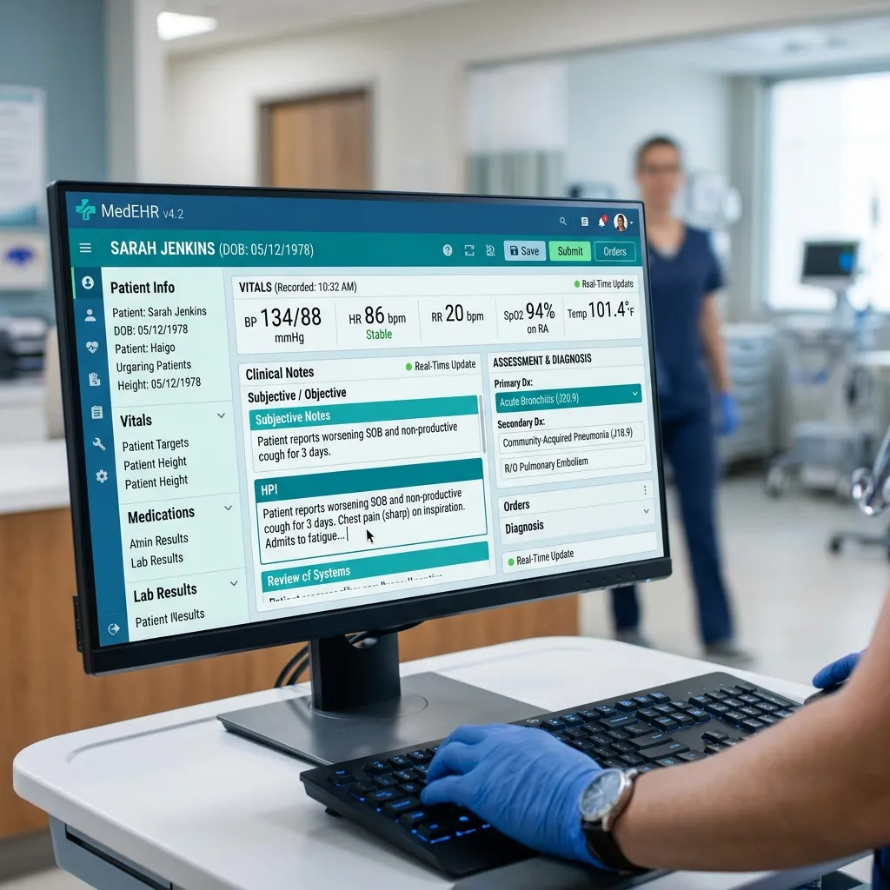

High-volume roster days
When a family physician is carrying a full roster, note completion pressure spreads across the whole team. Reviewed documentation keeps the day from ending in a charting backlog.
Anot Health puts certified medical scribes and QPS auditors in charge of your clinical charting, using high-speed speech AI to draft notes while human experts verify every dosage, diagnosis, and plan directly inside Accuro, Telus, or OSCAR.

Pure AI scribes like Scribeberry force Canadian physicians to rewrite disjointed notes. Our two-stage human review firewall eliminates that burden.
Speak naturally with patients during consultations. No wake words, no awkward microphones, and no speaking punctuation.
Comprehensive HPI, pertinent negatives, and physical exam findings formatted to your preferred Canadian clinic templates.
A dedicated scribe drafts and a Quality, Performance & Safety auditor validates every medication, dose, and referral before delivery.
We don't just generate text in a detached browser window. Our scribes format and deposit finished notes directly into your electronic medical record so all you do is glance and sign.
Native template injection, cumulative patient profiles, and provincial billing link.
Custom encounter stamps, clinical reminders, and automated health maintenance updates.
Standard eForm integration, consultation letters, and hospital outpatient charting.

The biggest gains usually come from the points in a Canadian clinic day where note lag, roster pressure, and after-hours charting start stacking on top of each other.
When a family physician is carrying a full roster, note completion pressure spreads across the whole team. Reviewed documentation keeps the day from ending in a charting backlog.
Accuro, PS Suite, Med Access, and OSCAR all structure encounters differently. We preserve the template your clinic already works in instead of flattening it into generic text.
The real win is not faster notes. It is fewer evenings spent finishing charts after the clinic has already closed.
We focus on whether the note is usable downstream — not just whether it exists. That means the chart should be easier for the physician to sign, easier for the biller to interpret, and strong enough to support the provincial code attached to it.
Notes are returned ready to sign without carrying charting into the next day.
Every note passes a trained scribe and a QPS reviewer before it reaches your EMR.
Clinical data stays in AWS Canada Central under PIPEDA and provincial privacy requirements.
Common questions from Canadian physicians evaluating medical scribing.
While Scribeberry relies on unverified raw AI output (which Canadian doctors report achieves only 72% note readiness with frequent clinical omissions), Anot Health adds certified medical scribes and QPS auditors. Our notes achieve 97% physician readiness with zero hallucinations.
Yes. 100% of our clinical infrastructure, transcription engines, and databases reside in AWS Canada Central (Montreal/Calgary), ensuring complete compliance with PIPEDA, PHIPA, HIA, and PIPA.
Practices are fully live in under 5 business days. Our clinical setup team imports your preferred note templates, configures your EMR layout, and pairs you with your dedicated scribe.
Book a 15-minute live consultation with our Canadian clinic specialist and experience the difference of human-verified clinical notes.